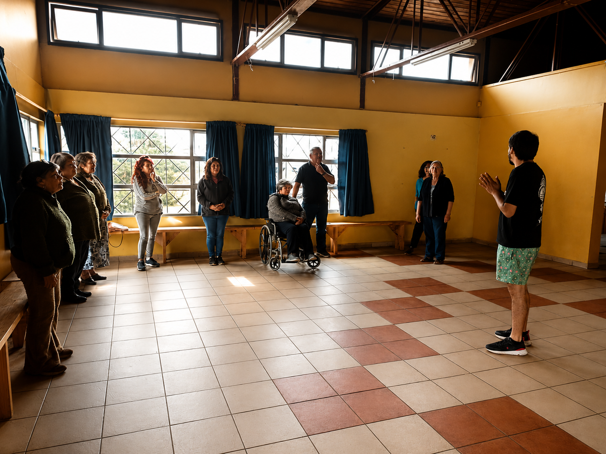

Galería
```


Programas artísticos, participación y transformación social a través de proyectos culturales, educativos y comunitarios desarrollados por mujeres comprometidas con el fortalecimiento de los territorios.
Conoce nuestro trabajoSomos una cooperativa cultural integrada por mujeres que impulsan proyectos de arte, educación y participación comunitaria para fortalecer los territorios y generar transformación social.
Nuestra labor conecta creatividad, territorio y comunidad, generando experiencias que promueven el diálogo, la reflexión crítica, la expresión colectiva y el fortalecimiento del tejido social.
Entendemos la cultura como una herramienta de encuentro, cuidado y construcción colectiva, capaz de mejorar la calidad de vida de las personas y de abrir espacios para nuevas formas de participación social.

Aspiramos a consolidarnos como una cooperativa cultural referente en Chile por la calidad de nuestras metodologías participativas, el trabajo colaborativo entre mujeres y la capacidad de desarrollar proyectos culturales sostenibles con impacto comunitario.
Intervenciones escénicas en espacios públicos que invitan a reflexionar sobre problemáticas sociales y a fortalecer la participación ciudadana.
Formación artística y comunitaria para organizaciones, universidades, agrupaciones y comunidades, promoviendo la creatividad y el encuentro.
Desarrollo metodológico que integra Teatro Invisible, educación emocional y neurociencia aplicada para promover bienestar, aprendizaje socioemocional y participación comunitaria.
Conversación sobre Teatro Invisible, participación comunitaria, neurociencia aplicada y el trabajo desarrollado con personas mayores en la comuna de San Antonio.
Ver entrevistaDesarrollo de actividades de mediación cultural que incluyen el lanzamiento de libros, conversatorios e intervenciones escénicas. Entre ellas destacan la presentación del libro "Dedos", de Catalina Ramírez; el lanzamiento de la publicación "Estado del Arte".
Ver fotografíaEmail: amancay.wessel@gmail.com
Teléfono: +56 9 2602 2940
Ubicación: Región de Los Lagos, Chile
Asociación Cultura que Transforma